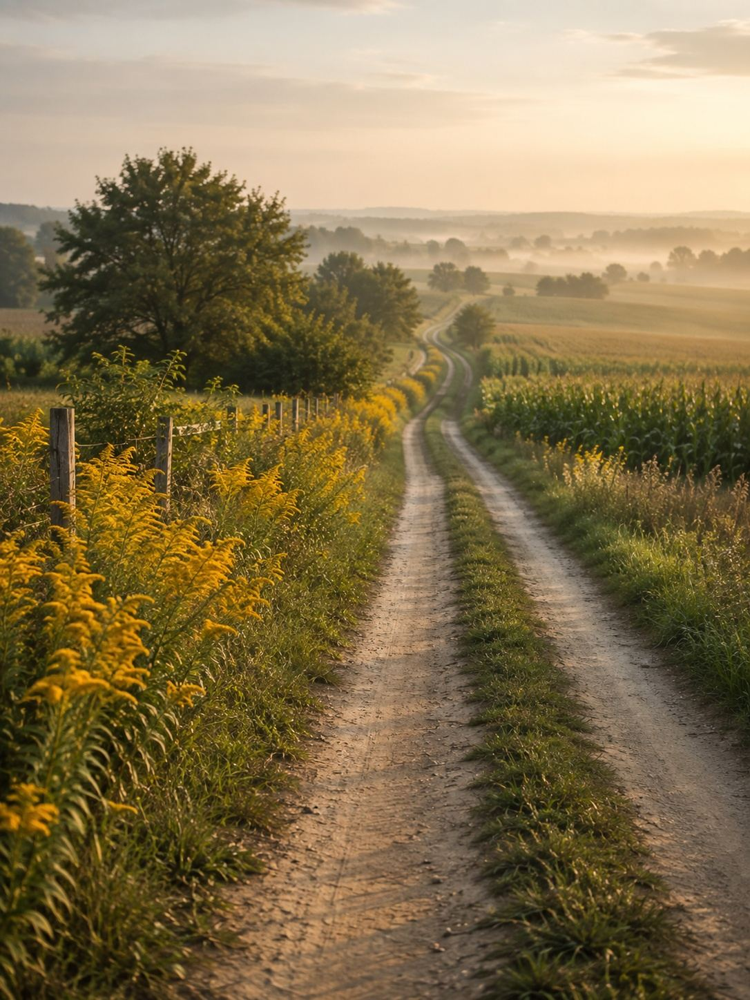

Dojazd
Nawigacja doprowadzi Was do wsi. Resztę tłumaczymy sami.
Numer 14 jest na płocie, ale zasłania go bez. Szukajcie żółtej skrzynki na listy i dwóch starych jabłoni przy bramie.
Samochodem
Z Łowicza drogą na Zduny, przez most na Bzurze. Za mostem pierwsza w prawo, potem 2 km prostą polną drogą przez pola. Ostatnie 300 metrów to szuter — osobówka przejedzie, ale powoli i bez brawury po deszczu.
Miejsce na trzy samochody przy stodole. Bramę zostawiamy otwartą do 22:00.
Pociągiem
Do Łowicza Głównego, z Warszawy Zachodniej około godziny. Ze stacji odbieramy — wystarczy zadzwonić pół godziny wcześniej. Kurs autobusem też jest, ale dwa razy dziennie i nie w weekendy.
Rowerem
Cała trasa z Łowicza asfaltem, prawie bez ruchu. Rowery można zostawić w stodole, jest tam też pompka i klucze.

Tak wygląda ostatni kilometr. We wrześniu cała miedza jest złota od nawłoci.
Napiszcie albo zadzwońcie.
Najlepiej między 9:00 a 20:00. Jeśli nie odbieramy, oddzwaniamy tego samego wieczoru.
- Telefon
- 501 234 567 — Maria
- kontakt@starysad.pl
- Adres
- Wólka Podlesie 14
99-400 gmina Łowicz - Współrzędne
- 52.0891, 19.9203
Tu w prawdziwej stronie wchodzi mapa — Google Maps albo OpenStreetMap, wklejona jako ramka. Na GitHub Pages działa bez problemu, bo to zwykły kod do wklejenia.
Formularz kontaktowy też jest możliwy, tylko musi go obsłużyć zewnętrzna usługa (np. Formspree). Dla większości siedlisk telefon działa jednak lepiej.